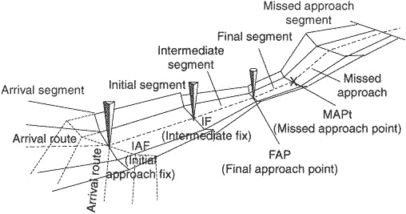
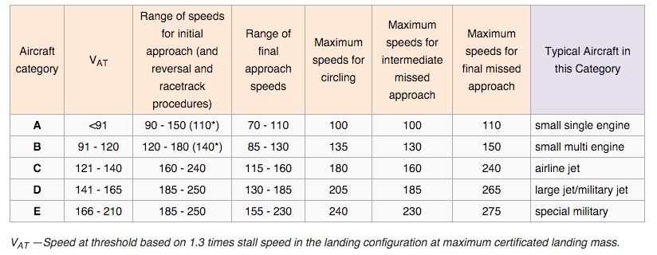
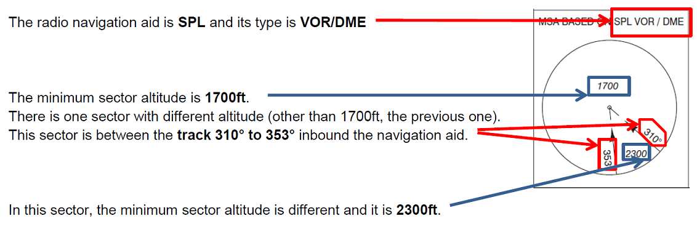
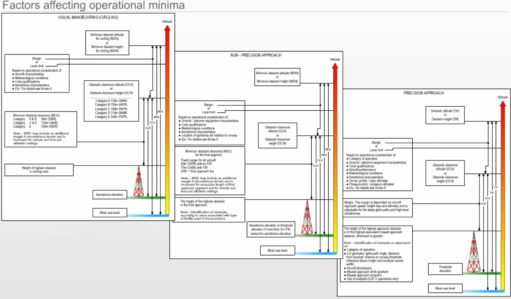

Chapter 5 Air Law 2
5.2 Instrument Departure Procedures
To ensure acceptable clearance above obstacles during the departure phase, instrument departure procedures may be published as
specific routes, or
omnidirectional departures, together with procedure design gradients and details of significant obstacles
departure procedures assuming that all engines are operating
wind effect: the procedure assumes that pilots will not compensate for wind effects when being radar vectored. Pilots will compensate for known or estimated wind effects when flying departure routes that are expresses as tracks to be made good.
obstacle clearance: the minimum obstacle cleareance equals zero at the departure end of runway (DER). From that point it increases by 0.8 percent of the horizontal distance in the direction of flight assuming a maximum turn of 15 degrees. In the turn initiation area or turn area, a minimum obstacle clearance of 295ft (90m) is provided.
procedure design gradient (PDG): unless otherwise published a PDG of 3.3% is assumed.
Contingency procedures, e.g. engine failure or emergency, occrring after
V1 are the responsibility of the operator (? unclear which one) in
accordance with Annex 6.
Use of automatic take-off thrust control systems ATTCS and noise
abatement procedures need also to be taken into consideration by the
pilot and operator.
where obstacle cannot be cleared by the appropriate margins when flown on instruments, airport operating minima are established to permit the visual flight clear of obstacles.
wherever possible: straight departure aligned with the runway centerline.
when a departure route requires a turn of more than 15 degrees to avoid obstacle, a turning departure is constrcuted.
flight speeds for turning departure:
airplace category A max speed 225km/h (120kts), B 305km/h (165kts), C 490 Km/h (265kts), D 540 km/h (290kts), E 560 km/h (300kts), H 165km/h (90kts)
Procedure Design Gradient
The PDG is intended as an aid to the procedure designer.
PDG based on
obstacle identificatio surface (OIS) having a 2.5% gradient or a gradient determines by the most critical obstacle penetrating the surface - whichever is higher, AND
an additional margin of 0.8%
Published gradients are specified to an altitude/height after which the minimum gradient of 3.3% is considered to prevail.
The final PDG continues until obstacle clearance is ensured for the next phase of flight (i.e. en-route, holding, or approach).
At this point, the departure procedure end is markes by a significant point.
5.3 Standard Instrument Departure (SID)
A SID is normally developed to accommodate as many aircraft categories as possible. Departures that are limited to specific aircraft categories are clearly annotated.
SID terminates at the first fix/facilyt/waypoint of the en-route phase following the departure.
SID are based on track guidance acquired within
within 20 km (10.8NM) from the departure end of runway on straight departures; and
within 10 km (5.4NM) after completion of turns on depatures requiring turns.
Track guidance may be provided by a suitably located facility, e.g. VOR, or by RNAV.
There are 2 basic types of SIDs:
straight departure: initial departure within 15 degree of runway center line
turning departure: departure requiring a turn of more than 15 degrees. Straight flight is assumed until reaching an altitude/height of at least 120 m (394ft) [ or 90m (295ft) for helicopters). Procedures normally cater for turns at a point 600m from the beginning of the runway. However, in some cases, turns may not be initiated before the DER (or a specifed point), and this information will be noted on the departure chart.
5.4 Omnidirectional departure
Omnidirectional departures are applied where no suitable navigation aid is available.
Omnidirectional depatures may however specify sectors to be avoided.
5.6 Instrument Approach Procedures
Instrument approach procedure in general dictated by the terrain surrounding the airport, the type of operations, and the aircraft to be accommodated.
These factors influence the type and setting of navigation aids in relation to the runway or airport. Airspace restrictions may also affect the setting of navigation aides.
Instrument approach procedures may have 5 separate segments:
arrival
initial
intermediate
final
missed approach segment

An area for circling the airport under visual conditions is also considered.
Approach segments begin and end at designated fixes.
However under some circumstances certain segments may begin at specified
points where no fixes are available. For example, the final approach
segment of a precision approach may start where the intermediate flight
altitude intersects the nominal glide path (final approach point).
There are 2 types of approaches:
straight-in, and
circling
Straight-in approach: wherever possible straight-in approach aligned with center line. Non-precision approaches, a straight-in approach is considered acceptable if the angle between the final approach track and the runway center line is 30 degrees of less.
Circling approach is specified for those cases where terrain or other constraints cause the final approach track alignment or descent gradient to fall outside the criteria for straight-in approach. The final approach track of a circling approach procedure is in most cases aligned to pass over some portion of the usable landing surface of the airport.
5.7 Categories of aircraft
aircraft performance ~ effect on airspace and visibility requirementsw for various maneuvers ==> most significant factor: aircraft speed
categories of “typical” aircraft have been established ~ standardised basis for aircraft maneuverability to specific instrument approach procedures.
For precision approach procedues, the dimension of the aircraft are also a factor for the calculation of the obstacle clearance height (OCH).
For category DL aircraft, an additional obstacle clearance height/altitude (OCH/A) is provided - when necessary - to take into account the specific dimension of these aircraft.
indicated airspeed at threshold (Vat) which is equal to the stall speed Vso multiplied by 1.3 or stall speed Vs1g multiplied by 1.23 in landing configuration at the maximum certified landing masss.
If both, Vso and Vs1g, are available the higher resulting Vat shall be applied.
Landing configuration is to be defined by (aircraft) operator or by the aircraft manufacturer.

91kts ~ 169km/h; 224km/h ~ 121kts; 261km/h ~ 121kts, 307 km/h ~ 166kt, 391 km/h ~211kts), H helicopter (typically A).
an operator may impose a permanent lower landing mass and use this mass for determining Vat if approved by the State of the operator. The category for a given airplace shall be a permanent value and thus independent of changing day-to-day operations.
Instrument approach procedures will specify individual categories for which procedure is approved. “Normally”, procedures will provide for protected airspace and obstacle clearance for aircraft up to and including Category D. However, where airspace requirements are critical, procedures may be restricted to lower speed categories.
alternatively, the procedure may specify a maximum IAS for a particular segment without reference to aircraft category. In any case, it is essential that pilots comply with the procedures and information depicted on instrument flight charts to remain in the areas developed for obstacle clearance purposes.
5.8 Minimum Sector ALtitudes
Minimul sector altitudes (MSA) are established for each airport and provide at least 300m (984ft/1000ft) obstacle clearance within 46km(25NM) of the homing facility (e.g. VOR, NDB) associated with the approach procedure at the airport.
On all approach plates the MSA is represented.
The lowest level permitted for an arrival route will be the MSA for the appropriate quadrant that contains the arrival track.

Note: track to fix = QDM
5.9 Obstacle Clearance
obstacle clearance primary safety consideration in the development of instrument approach procedures.
In the case of precision approach and circling approach procedures, an OCA/H is sprecified for each category of aircraft.
Obstacle clearance altitude OCA/ height OCH is
in a precision approach procedure the lowest altitude/height above the elevation of the relevant runway threshold, at which a missed approach must be initiated to ensure compliance with the appropriate obstacle clearance criteria; or
in a non-precision approach procedure the lowest altitude/height above the airport elevantion or the elevation of the relevant runway threshold, if the threshold elevation is more than 2m/7ft below the airport elevation, below which an aircraft cannot descend without infringing the appropriate obstacle clearance criteria; or
in a visual (circling) procedure the lowest altitude/height above the airport elevation below which an aircraft cannot descend without infringing the appropriate obstacle clearance criteria.
Factros affecting operational minima.

Operators may specify 2 types of approach procedures for non-precision approaches
descend immediately to not below the minimum step down fix altitude/height or MDA/H as appropriate.
This method is acceptable as long as the achieved descent gradient remains below 15% and the missed approach is initiated at or before the missead approach point.stabilised approach requires a continues descent with rate of decent adjusted to achieve a constant descent gradient to a point 15m (50ft) above threshold taking into regard the minimum crossing altitudes/heights specified for the final approach fix FAF and any prescribed stepdown fix. If the required visual reference approaching the MDA/H is not achieved, or if the missed approach points MAPt is reached before reaching the MDA/H, the missed approach must be initiated.
Aircraft are not permitted to descend below the MDA/H at any time.
The stabilised approach technique is also associated with operator specified limits of speed, power, configuration, and displacement at speficied heights designed to ensure the stability of the approach path and a requirement for an immediate go-around, if these requirements are not met.